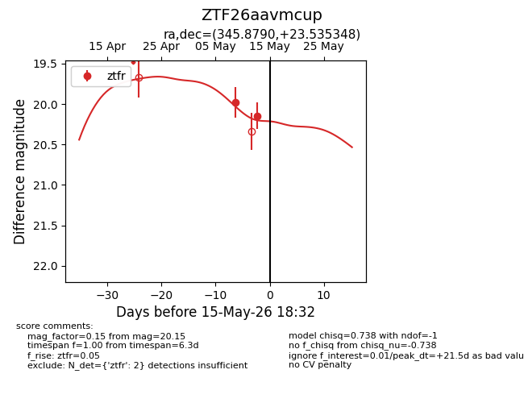
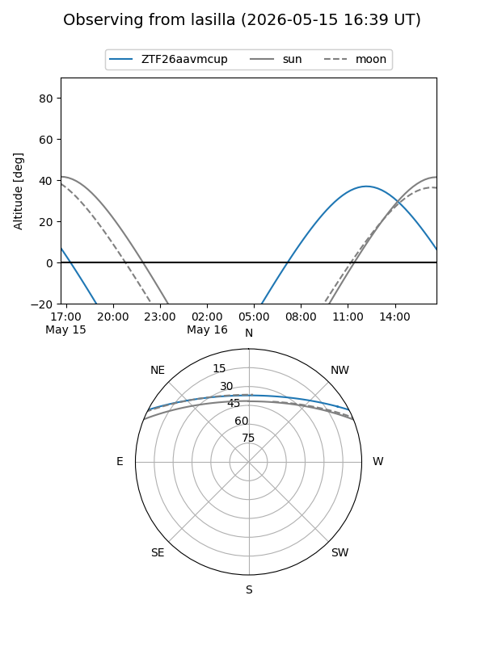
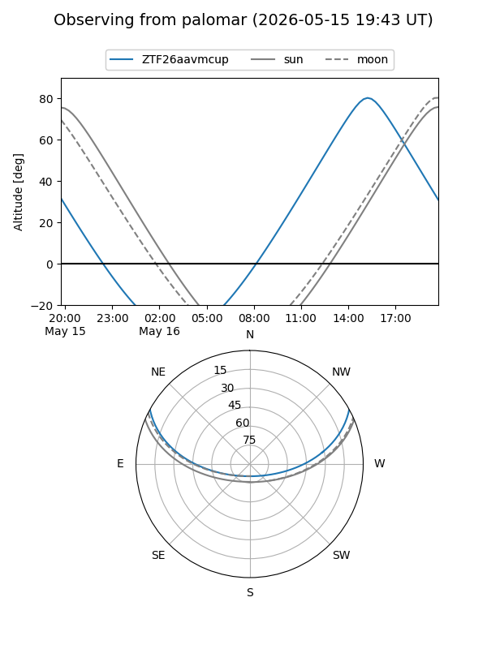
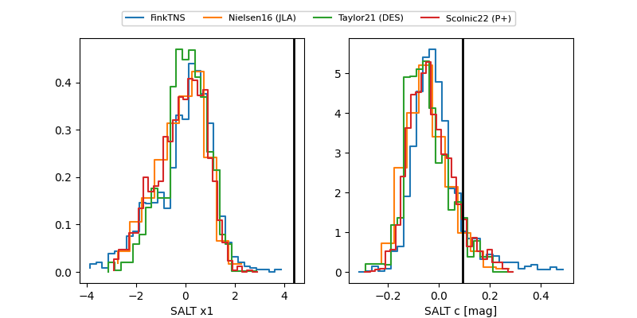

ZTF26aavmcup
Target ZTF26aavmcup at 2026-05-15 18:34
Aliases and brokers:
FINK: link
Lasair: link
ALeRCE: link
alt names
ZTF26aavmcup (ztf,fink_ztf)
Coordinates:
equatorial (ra, dec) = 345.8790,+23.53535
equatorial (HMS+DMS) = 23:03:30.97,+23:32:07.25
galactic (l, b) = (93.1881,-33.02911)
Flags:
Photometry:
last ztfr=20.15
2 ztfr detections
Lightcurve

Visibility


Additional plots
